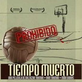
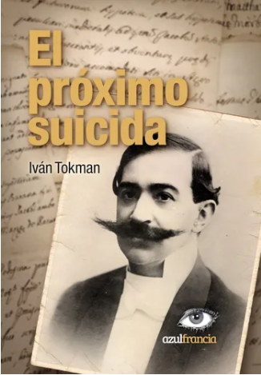

Guionista
Eyeworks | sep. 2016 - nov. 2016
Overhaulin - Argentina
Emisión especial para Latinoamérica del reconocido formato de Discovery Channel.
Guionista
Televisión Pública | ago. 2016 - oct. 2016
Vas a viajar en mi Sidecar
Escritura de Guion de la serie documental "Vas a viajar en mi Sidecar".
Director
El Grillo Cine | 2010 - 2012
Tiempo Muerto - Película Documental
Ganador Mención especial Feisal en el 25º Festival Internacional de Cine de Mar del Plata.
Selección Oficial Documental Internacional - Festival Internacional de Cine de Viña del Mar 2010.

Director
Tec TV | nov. 2013 - feb. 2014
Neuropolis
Serie documental de 8 capítulos (Tec en premios).
Coordinador de Contenidos
Lupa TV | feb. 2012 - ago. 2013
"Ni Dios Ni Amo, historia del anarquismo en la Argentina" - Serie documental. 13 capítulos.
"4 de Copas" - Docuficción.
Taller Internacional: Dramaturgia y Escritura Documental
Escuela Internacional de Cine y Televisión, San Antonio de los Baños, Cuba | jun. 2016 - actualidad
Instituto de Arte Mauricio Kagel - Licenciatura en Cine Documental
Universidad Nacional de San Martín (UNSAM) | mar. 2016 - actualidad
Docente en el Taller de guion y realización.
Docente en la cátedra Estructuras dramáticas.
Cátedra Taller de Escritura de Guion
Escuela Nacional de Experimentación y Realización Cinematográfica (ENERC) | 2005 - actualidad
Segundo Año. Especialidad Guion.
El Próximo Suicida
Novela | Editorial azulfrancia (2021)
ISBN: 9789878422190
Páginas: 184
Formato: Tapa Blanda
Sinopsis: "Operaba los químicos y las placas fotosensibles con precisión quirúrgica. Y así: desde el fondo de una cubeta, fue emergiendo paulatinamente el dolor del recuerdo. Primero, la cuenca vacía. Luego los contornos del rostro mulato. Las cicatrices que surcaban su cara. Flotaba en un líquido revelador, como ahogada. Posadas había hecho de un instante ya muerto un presente eterno".

Si te interesa saber más sobre mis talleres, trabajos o simplemente quieres ponerte en contacto, puedes escribirme a través de los siguientes canales: